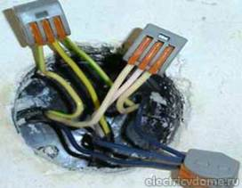

Поменять розетку и выключатель в комнате, фото и цены.
Тел. 8 904 642 08 57 Николай.

О розетках и выключателях в комнате.
На первый взгляд может показаться, что розетки - это мелочи.
Но если выбрать их неправильно, может даже произойти пожар.
Практически в каждом доме имеются всякие электроприборы. Естественно, без розеток не обойтись. В магазинах вы можете найти сотни разных экземпляров, отличающихся друг от друга по цене, дизайну и качеству.
Но не стоит покупать самые дешевые, лучше позаботиться о безопасности и обратить внимание, в первую очередь, на качество розетки. Как известно, скупой платит дважды. Чаще всего цена товара соответствует его качеству. Если между штырями вилки и клеммами в розетке плохой контакт, будут появляться искры и начнет выделяться тепло, розетка может выйти из строя.
Но качественный зарубежный пластик проводит тепло гораздо лучше и передаёт его стене.
Сколько стоит поменять розетку или выключатель в комнате?
|
Площадь пола комнаты. |
Цена за электромонтаж под ключ. |
|
10 кв. м. |
От 7 000. |
|
14 |
9 000. |
|
18 |
12 000. |
|
22 кв. м. |
От 14 000. |
|
Заменить 1 розетку или выключатель. |
От 300 руб. |

Дизайн тоже не будем ставить на последнее место, цвет розетки должен хорошо сочетаться с цветами комнаты, но классические белые розетки могут неплохо выглядеть в любом помещении. Многие фирмы применяют в изготовлении розеток цветные элементы, которые можно легко поменять, не затрагивая устройство самого изделия. Поэтому, если вы переклеили обои, вам не нужно будет беспокоиться о том, что розетка не согласуется по цвету. Если у вас есть слишком любознательные животные или маленькие дети, вы можете купить розетки с крышками.
Есть также розетки с выталкивателем, который помогает безопасно извлечь вилку. Иногда вилку стремятся выдернуть, взявшись за провод. Но делать этого ни в коем случае нельзя. При установке розеток следует отключить электричество и проверить наличие тока, например, специальной отверткой с индикатором. Не советую проверять это голыми руками. Чаще всего крепление проводов к токопроводящей части производится винтовым соединением. Реже в розетках используется прижимной контактный узел, что не нравится людям, которые привыкли работать с винтами.
 Но у винтового соединения тоже есть минус - со временем возможно ослабление контакта, поэтому периодически нужно подкручивать винты. Прижимной контактный узел сильно ускоряет процесс монтажа и обеспечивает хороший контакт провода с токопроводящей частью. Розетки бывают внешние и внутренние (Для разных типов проводки).
Но у винтового соединения тоже есть минус - со временем возможно ослабление контакта, поэтому периодически нужно подкручивать винты. Прижимной контактный узел сильно ускоряет процесс монтажа и обеспечивает хороший контакт провода с токопроводящей частью. Розетки бывают внешние и внутренние (Для разных типов проводки).
Перейдем к выключателям.
Почти всегда их продают в одном комплекте с розеткой, сделанными в одинаковом дизайне. Выключатель с розеткой часто устанавливают рядом друг с другом. Выключатели различаются по способам крепления проводов к токопроводящим деталям (с винтом и без, как и в розетках). В некоторых моделях есть небольшие лампочки подсветки, чтобы было проще найти выключатель в темноте. Как и розетки, выключатели бывают внешние и внутренние. Для включения и выключения света в комнате обычно используют клавишные выключатели. В России верхнее положение клавиши соответствует включенному свету, а нижнее - выключенному (Если, конечно, выключатель не установили случайно перевернутым). Но есть ещё множество других видов выключателей: поворотные, кнопочные, с датчиком движения, шнуровые, сенсорные, диммеры, хлопковые, рычажные. Некоторые из них опишу вкратце. Поворотные выключатели обычно используют в кухонных плитах, для включения света их используют редко.
 Кнопочные выключатели стали распространяться относительно недавно. Они представляют собой кнопку, первое нажатие которой замыкает цепь, а второе - размыкает.
Кнопочные выключатели стали распространяться относительно недавно. Они представляют собой кнопку, первое нажатие которой замыкает цепь, а второе - размыкает.
Выключатели с датчиком движения реагируют на движение любого теплого объекта (человека или домашнего животного). Можно расположить датчик на уровне роста человека, чтобы животные не попадали в зону действия датчика и не включали свет.
Шнуровые выключатели чаще всего устанавливают в светильниках.
Сенсорный выключатель помогает включить свет в одно легкое касание (в других моделях нужно просто провести рукой рядом)
Рычажный выключатель похож на клавишный, только вместо клавиши у него рычажок.
Диммеры позволяют не только включать и выключать свет, но и регулировать его яркость.
Ну а хлопковый выключатель включает и выключает свет по хлопку.
Существуют сотни разных конструкций выключателей и розеток, при покупке советую вам выбирать как можно тщательней.
 Поменять проводку в квартире.
Поменять проводку в квартире. Сколько будут стоить материалы.
Карта сайта.
Замена электропроводки в панельном доме.
Расценки на электропроводку квартир.
Замена проводки в хрущевке.
Электромонтаж в частном доме.
Электрика в загородном доме.
Сколько стоит замена электропроводки в двухкомнатной квартире?.
Сколько стоит проложить проводку в 3 ком квартире?
Сколько стоит проложить проводку в четырех комнатной квартире?
Сколько стоит сделать внутреннюю проводку?.
Стоимость штробление стен.
Установка люстр и светильников.
Замена электропроводки в панельном доме.
Электромонтаж проводов в бане.
Электрика в загородном доме